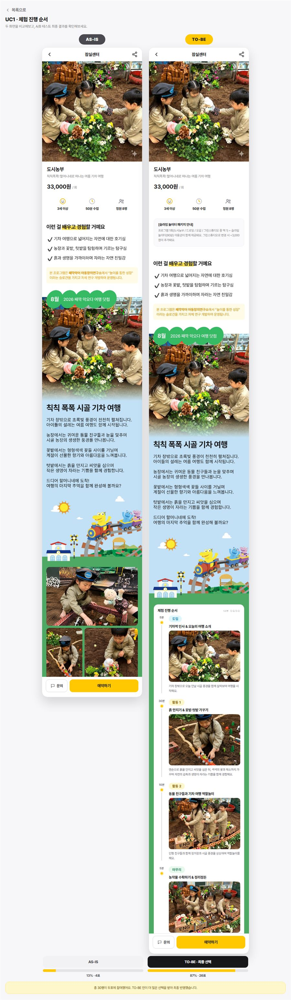
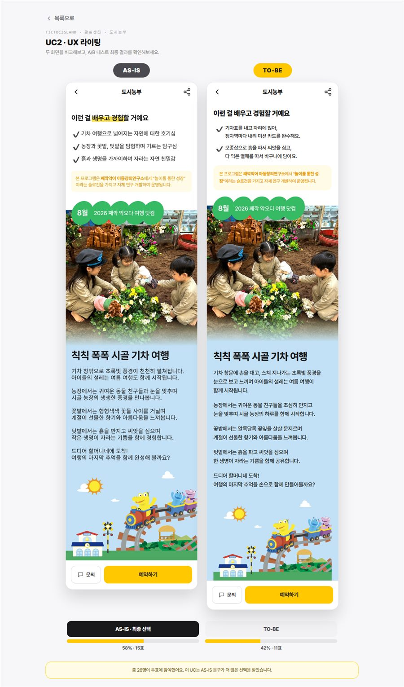
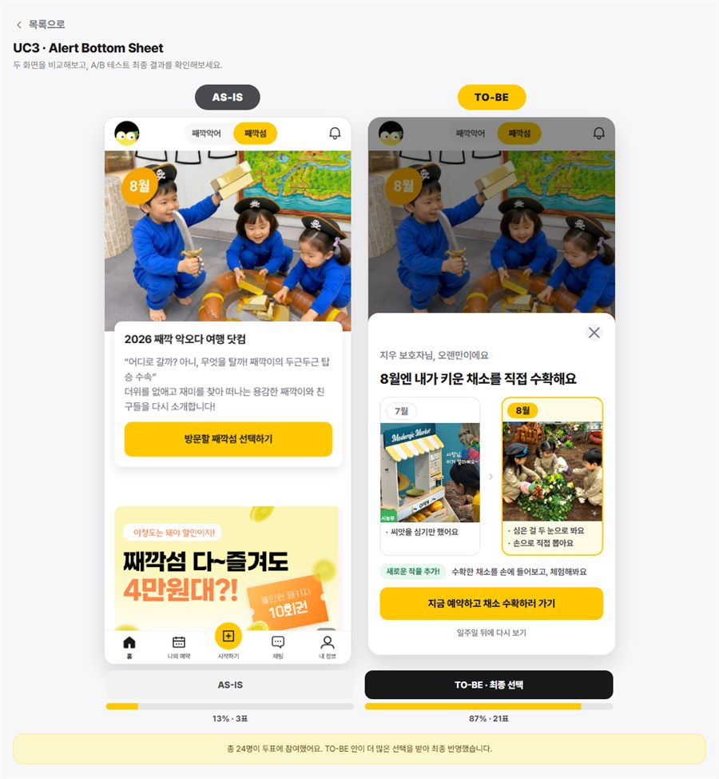
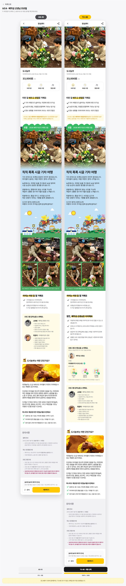
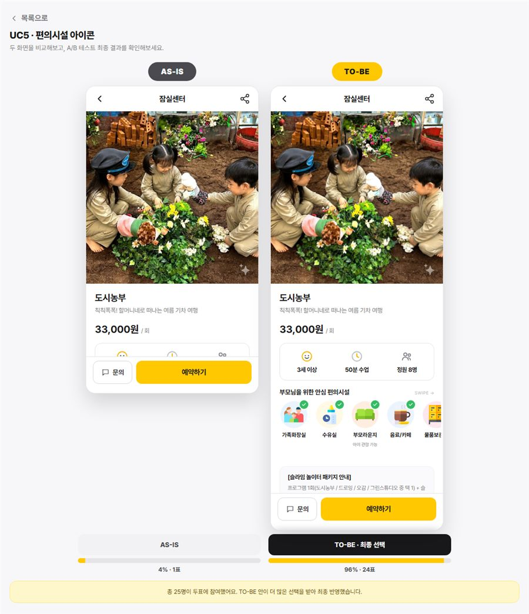

TicTocIsland · Design Case Study
째깍섬 상세페이지 UX 수정을 통한 재이용률(Retention) 개선 프로젝트
상세페이지 전환에 영향을 줄 만한 5가지 개선 가설(진행 순서 타임라인, UX 라이팅, 재방문 알림, 선생님 프로필, 편의시설 안내)을 AS-IS/TO-BE 화면으로 만들어 실제 사용자 투표로 검증했습니다.
익명 투표 사이트를 배포해 실시간으로 결과를 1인 1표로 집계했습니다. 아래는 투표 종료 후의 최종 결과입니다.
Team
프로젝트 참여 멤버
박정빈
건국대학교
김은찬
건국대학교
박소희
대진대학교
신윤서
국민대학교
양세비
째깍섬 서비스기획팀
Process
프로젝트 진행 과정
Background
조회수를 늘리는 접근만으로는 매출이 늘지 않았습니다
째깍섬 방문 리뷰(네이버 블로그, 2023–2026)를 분석하고 보호자 심층 인터뷰 5명을 진행했습니다. 가격·공간 문제와 별개로 "무엇을 하는 프로그램인지 미리 알기 어렵다", "지난번과 똑같아 보여 재구매하지 않았다", "홍보 내용과 실제 수업이 달랐다"는 불만이 반복됐고, 세 유형 모두 콘텐츠 자체보다 예약 전 정보 제공과 기대 관리의 실패에서 비롯됐습니다.
리뷰 아쉬운 점 분석 (최종 191건 · 2023-01-21~2026-07-11)
- 인터뷰 대상자 5명 중 4명이 부정적인 리뷰 위주로 확인한다고 답했습니다 (부정 후기가 더 현실적이고, 긍정 후기는 협찬일 수 있다는 인식).
- 5명 중 4명이 보호자 편의시설·서비스를 중요하게 생각했습니다 (대기공간, 카페/음식 메뉴, 안마의자 등).
- 모든 인터뷰 대상자가 혼잡도·아이 케어를 언급했고, 부모·아이가 분리되는 상황에서는 선생님의 신뢰할 수 있는 이력·자격증이 긍정적으로 작용한다고 답했습니다.
Target User
누구를 위한 개선인가
Problem & Hypothesis
문제 정의와 가설 설정
인터뷰와 데이터에서 발견한 문제를 5개 세부 가설로 정리하고, 기본 품질(있으면 당연·없으면 불만), 일원 품질(있는 만큼 만족), 매력 품질(있으면 감동) 세 그룹으로 우선순위를 나눴습니다.
Project Goal
프로그램 상세페이지 UX 수정으로 재구매율을 높입니다
Use Cases
테스트 항목 · 최종 결과
AS-IS/TO-BE 화면을 실제로 비교해보세요. 이미지를 누르면 전체 화면과 최종 투표 결과를 볼 수 있습니다.

프로그램 타임라인
상세페이지 내 프로그램 진행순서 나열 방식
무엇을 바꾸나 · 50분 수업을 도입(5분)→활동1(20분)→활동2(20분)→마무리(5분) 4단계 시간표로 노출하고, 선생님 소개 영역을 하단에 추가
전체 화면·결과 보기
행동 동사 UX Writing
화면 안내 문구 카피 톤 비교 방식
무엇을 바꾸나 · 감상·분위기 동사(느껴보아요·만나보아요)를 아이의 몸이 하는 행동 동사(자르다·붓다·문지르다·쌓다)+결과물로 교체
전체 화면·결과 보기
Alert Bottom Sheet
재방문 시 바텀시트 안내 노출 여부 비교 방식
무엇을 바꾸나 · 재방문 유저의 상세페이지 상단에 "지난 회차와 달라진 점" 요약 배너를 노출 (예: 만들기 중심 → 신체활동 중심)
전체 화면·결과 보기
째깍섬 선생님 프로필
선생님 소개·자격증·능력치 배지 노출 여부 비교 방식
무엇을 바꾸나 · 아동돌봄지도사 자격, 응급처치·안전교육 이수 여부를 체크 아이콘+텍스트로 노출하고, 선생님 프로필 카드를 추가
전체 화면·결과 보기
부모님 편의시설
부모 편의시설 정보 아이콘 노출 여부 비교 방식
무엇을 바꾸나 · 가족화장실·수유실·부모라운지·음료/카페 등 편의시설을 아이콘 배너로 상세페이지 상단에 노출
전체 화면·결과 보기Usability Test
사용자 만족도 조사
온라인 투표 · 누적 129표 집계 (UC별 24~30표, 한 명이 여러 UC에 중복 투표할 수 있어 총 참여 인원과는 다릅니다)
Expected Impact
기대 효과
이번 개선의 핵심 목표는 상세페이지 UX를 통한 재구매율(Retention) 개선입니다. 정량적인 사내 매출·재구매율 수치는 민감 정보라 공개 범위에서 제외했고, 대신 이후 추적하기로 한 지표만 남겨둡니다.